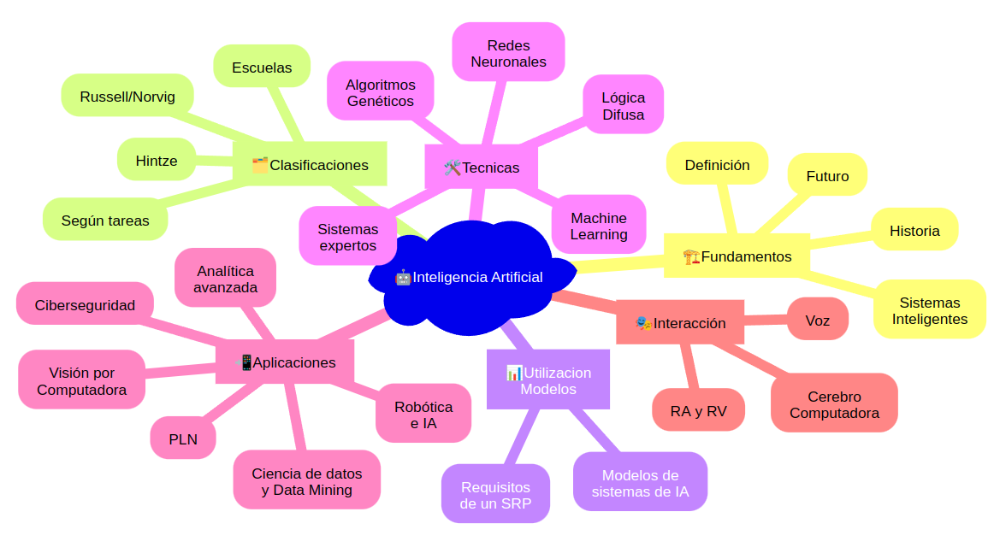

UD01: Caracterización de sistemas y utilización de modelos de Inteligencia Artificial¶
Modelos de Inteligencia Artificial¶
version: 2023-08-05¶
6. Nuevas Formas de Interacción¶
Interfaces de Voz¶
Las interfaces de voz son una forma de interacción con sistemas de Inteligencia Artificial que permiten a los usuarios comunicarse mediante comandos de voz en lugar de texto o clics.
Algunas aplicaciones: * ### Asistentes Virtuales * Siri * Google Assistant * Amazon Alexa
Sistemas de Navegación¶
- Las interfaces de voz también se utilizan en sistemas de navegación para proporcionar instrucciones de conducción en tiempo real. Algunos ejemplos incluyen:
- Google Maps
- Sistemas de Navegación Integrados en Automóviles
Aplicaciones de Accesibilidad¶
Accesibilidad tecnológica para personas con discapacidades visuales o motrices. * Lectores de Pantalla: Estas aplicaciones utilizan la voz para leer en voz alta el contenido de la pantalla de un dispositivo, permitiendo que las personas con discapacidades visuales puedan interactuar con la tecnología. * Comandos de Voz para Controlar Dispositivos: Las interfaces de voz permiten a personas con discapacidades motrices controlar dispositivos y realizar tareas sin la necesidad de utilizar las manos.
Interfaces Cerebro-Computadora (BCI)¶
- Las Interfaces Cerebro-Computadora (Brain-Computer Interface BCI) son tecnologías avanzadas que permiten la comunicación directa entre el cerebro humano y dispositivos tecnológicos. A través del registro y análisis de señales cerebrales, estas interfaces posibilitan que las personas controlen dispositivos y sistemas mediante su actividad cerebral.
-
Asistencia Médica¶
-
Neurofeedback¶
-
Juegos y Entretenimiento¶
Realidad Aumentada y Virtual¶
- La Realidad Aumentada (AR) y la Realidad Virtual (VR) ofrecen nuevas formas de interactuar con la IA, aplicaciones destacadas son:
- Educación y Formación
- Diseño y Visualización
- Entretenimiento e Inmersión

